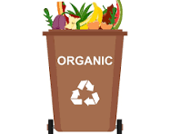

Processo Passo a Passo
1. Resíduos Orgânicos

Os restos de comida e esterco são coletados.
Processo do Biogás
Resíduos: 0
Biogás: 0
Energia: 0
Plantas saudáveis: 0
Transformando lixo em energia para ajudar na plantação

Os restos de comida e esterco são coletados.
Resíduos: 0
Biogás: 0
Energia: 0
Plantas saudáveis: 0